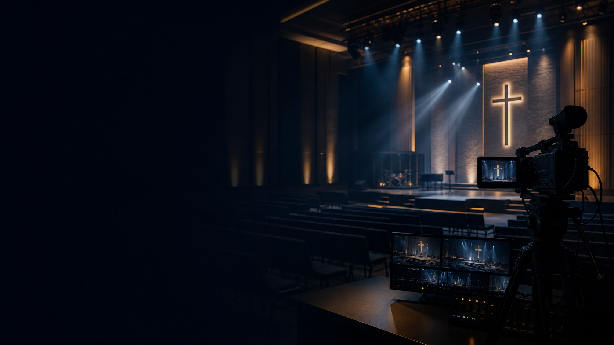
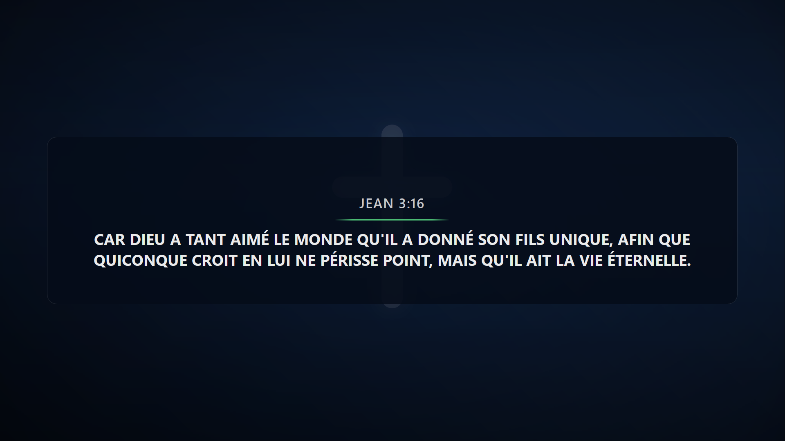
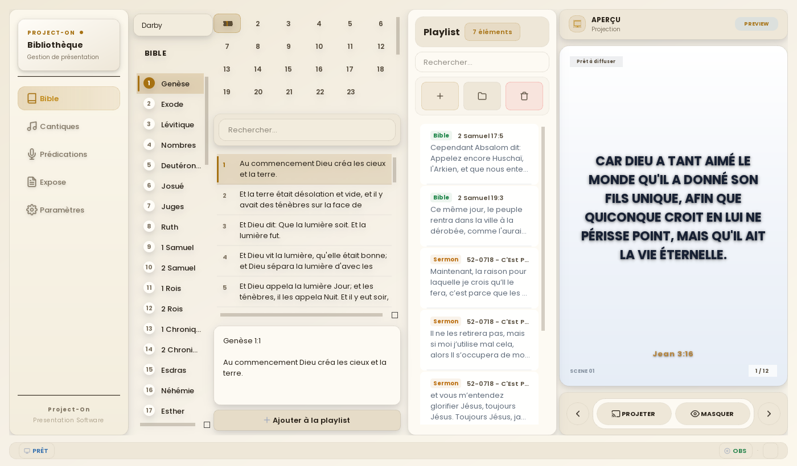
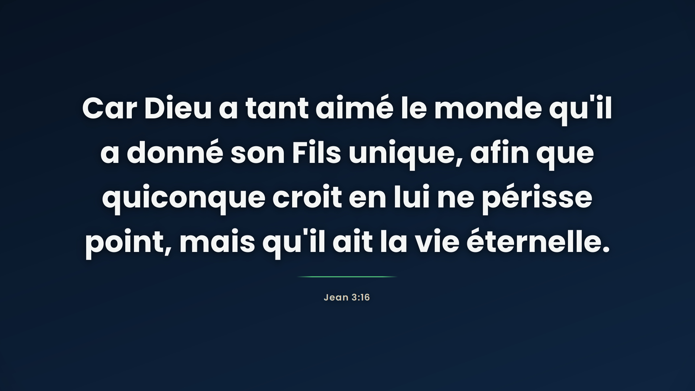

01 · Diffusion
Une scène adaptée à chaque moment
Lower Third, verset plein écran, panneau latéral, sous-titres et carte focus. Chaque mode dispose de sa propre URL pour vos scènes OBS.
- Lower Third
- Plein écran
- Panneau
- Sous-titre
- Focus
Version 1.5.0 · Windows 10 / 11
Bible, cantiques, prédications et exposés dans un seul espace de travail. Projetez localement en grand format ou composez une sortie OBS précise, lisible et prête à diffuser.

Un seul poste de contrôle
Une interface cohérente, pensée pour réduire les manipulations pendant la réunion.
01 · Diffusion
Lower Third, verset plein écran, panneau latéral, sous-titres et carte focus. Chaque mode dispose de sa propre URL pour vos scènes OBS.
02 · Bibliothèque
Navigation par livre et chapitre sur barre multi-lignes, recherche instantanée, cantiques par strophe et contenus personnalisés.
03 · Playlist
Dossiers de culte, suppression de slides, glisser-déposer, contenus personnalisés et découpage intelligent des textes longs en slides équilibrées.
04 · Projection locale
Texte auto-ajusté à très grand format sur écran secondaire ou vidéoprojecteur, transition en fondu simple, zones de sécurité et arrière-plans sobres.

OBS Pro
Configurez une source Navigateur 1920 × 1080, dupliquez-la par scène, puis choisissez la composition adaptée. La transparence, les zones sûres et l’auto-ajustement sont déjà gérés.
Cinq façons de projeter
Un bandeau broadcast lisible qui laisse l’image principale respirer.

Deux ambiances
Basculez à tout moment entre le thème cinématique et le thème lumineux Sanctuary.

Projection locale
En 1080p, le texte occupe la taille qu’il faut — ici 82 pixels — avec référence centrée et transition en fondu, ni plus ni moins.

Aide à l’installation
Le « Contrôle intelligent des applications » (Smart App Control) de Windows 11 méfie les logiciels peu téléchargés. Project-On est signé numériquement : installez une fois le certificat de confiance et Windows reconnaîtra l’éditeur.
Installer le certificat… →
Utilisateur actuel → Placer tous les certificats dans le magasin suivant →
Autorités de certification racines de confiance → Terminer.
ProjectOn_1.5.0_Setup.exe :
Windows affiche désormais l’éditeur Elie Nyembo / Project-On.
Propriétés → cochez Débloquer en bas → OK,
puis relancez l’installation.
Si le « Contrôle intelligent des applications » persiste sur un PC très récent : Paramètres Windows → Confidentialité et sécurité → Sécurité Windows → Contrôle des applications et du navigateur → Paramètres du contrôle intelligent des applications → Désactivé. Ce réglage Windows est définitif et n’est requis que sur les machines où il est actif.
Captures actuelles
Les captures ont été reprises depuis l’état actuel de Project-On 1.5.0.


Project-On 1.5.0
L’installeur Windows signé guide la mise en place. La version portable permet aussi de démarrer sans installation.
Windows 10 / 11 · 64 bits · environ 220 Mo · Windows bloque le fichier ? Voir l’aide à l’installation